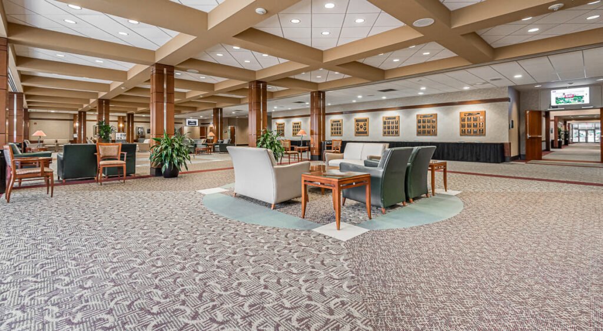

Visit Raleigh
Venue & travel
Plan your visit to the McKimmon Conference and Training Center.
Conference venue
McKimmon Conference
and Training Center
NC State University
1101 Gorman StreetRaleigh, NC 27606
NAPS 2027 will take place at NC State’s McKimmon Conference and Training Center, which hosts conferences, workshops, and educational events.

Getting here
Raleigh-Durham International Airport is an arrival option for attendees flying to Raleigh. The center’s official directions describe the route from the airport via I-40 and Gorman Street, Exit 295.
Use the Gorman Street street address above for navigation, rather than the center’s campus-box mailing address.
Official directionsParking
The center currently lists free visitor parking in its front lots. Park in designated visitor spaces; the smaller side lots are reserved for university employees.
Any NAPS 2027 parking updates or conference transportation arrangements will be posted when finalized.
Parking information & venue FAQsHotels & student lodging
NAPS 2027 hotel recommendations, conference rates, and booking instructions will be announced. Student lodging coverage is planned; eligibility and reservation details are forthcoming.
The center also maintains a general hotel list for visitors. These listings are separate from NAPS 2027 lodging arrangements.
Browse the center’s hotel listAt the venue
Free guest Wi-Fi is available through NC State’s ncsu_guest network. The venue FAQ provides connection instructions.
For an introduction to the center’s meeting rooms and event spaces, visit its official venue information pages.
McKimmon Center website